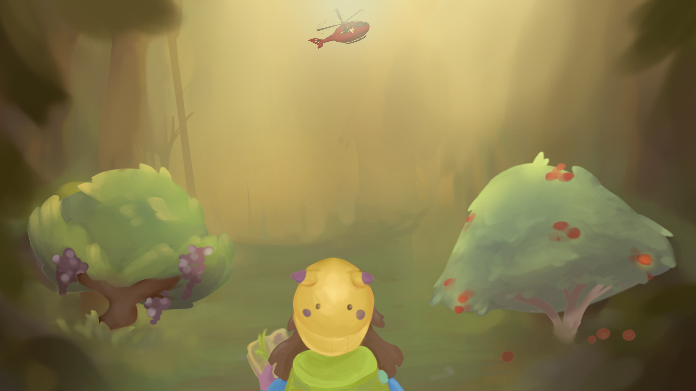
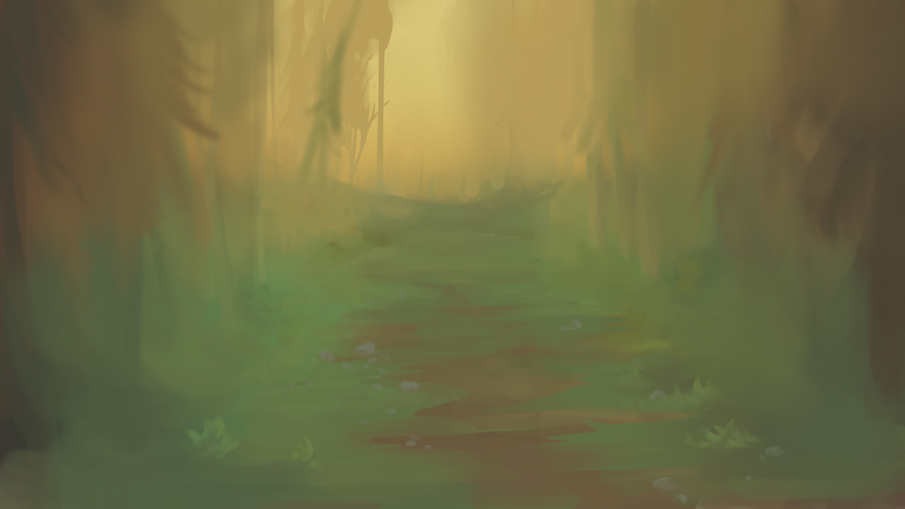
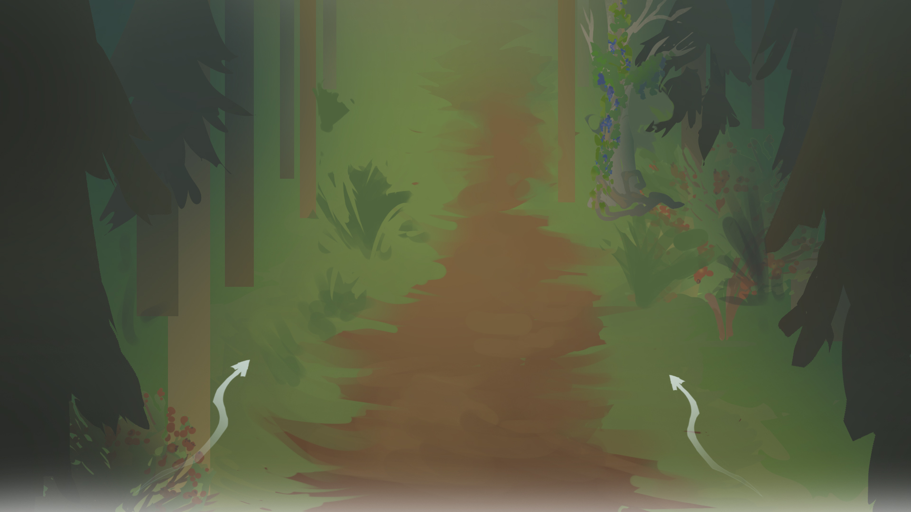
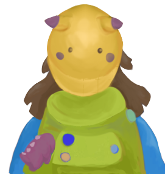
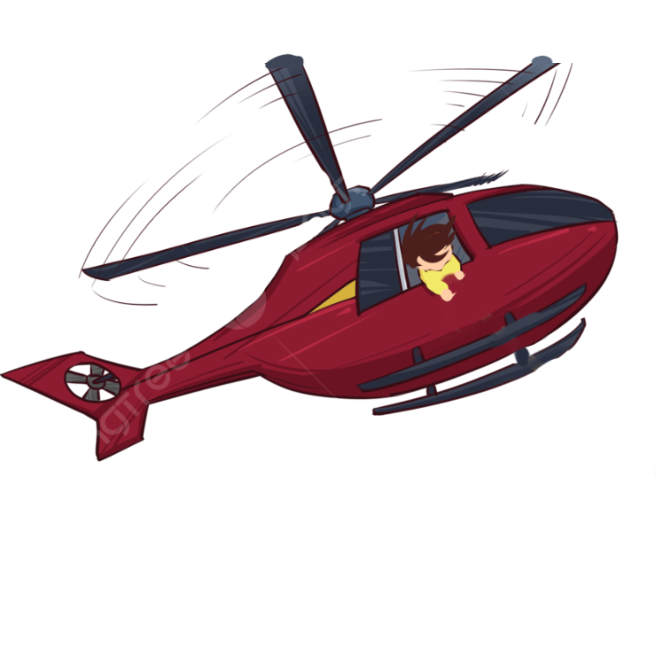
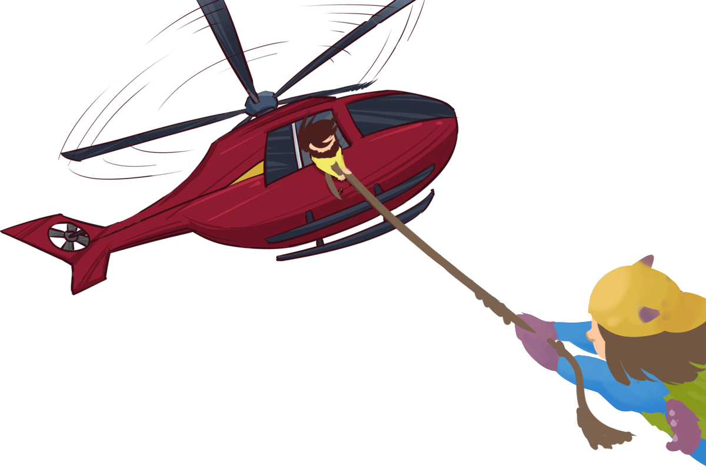
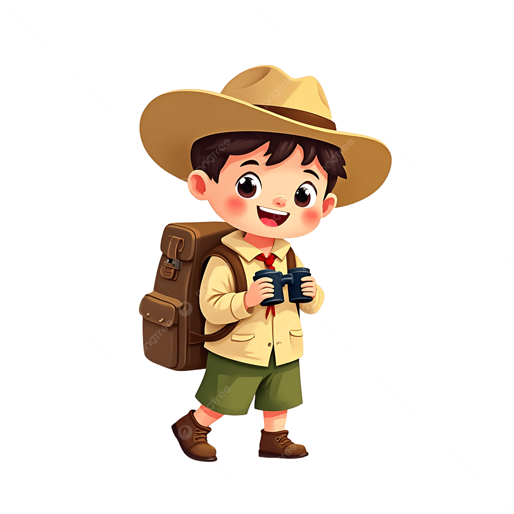
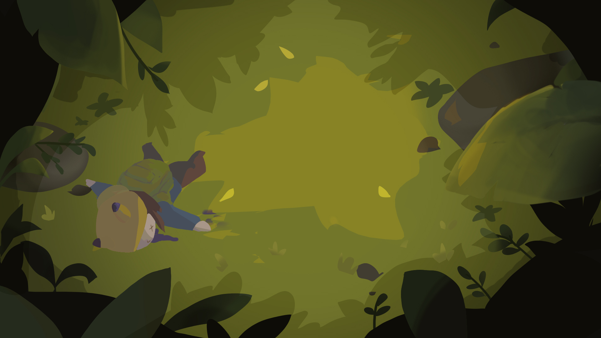
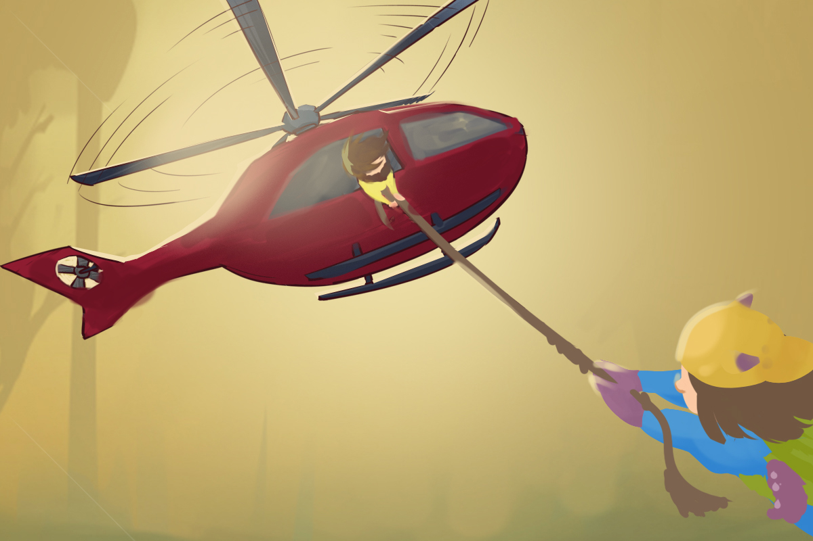
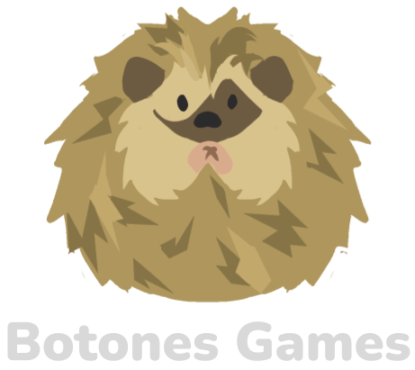

background — art coming later
forest — art coming laterOh no, you just got lost in the forest and need to survive until rescue arrives. Will you make it?
Use ← / → or A / D to move and eat edible plants while avoiding toxic ones.
Learn to tell them apart, then keep choosing the right ones.
Use ← / → or A / D to move and eat edible plants while avoiding toxic ones.
Learn to tell them apart, then keep choosing the right ones.
This game is for educational purposes only. It does not replace hands-on foraging training.
Never eat a plant unless you can identify it with certainty.
Unlike in this game, you don't have extra hearts or a chance to start over.
Find hands-on foraging training near you, like:
Built in 2.5 days.

forest — art coming later
player — first-person placeholder
helicopter — drop images/helicopter.png in to show it here


player collapsed, tongue out — art coming later
helicopter rescue — art coming later
credits — drop images/credits.png in to show it hereFirst, let’s learn about 2 similar plants
Now that you know about both plants
Which plant would you eat?